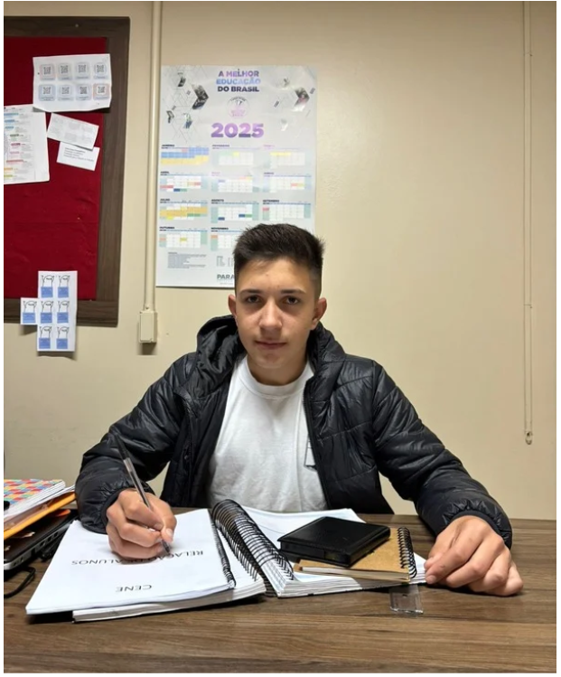

Entrevista com o lider do Gremio Estudantil
Nesta edição do jornal da escola, foi realizada uma entrevista com Guilherme Borghezan, presidente do Grêmio Estudantil Fênix.
O grêmio é formado por 22 alunos que ajudam a organizar atividades e representam os alunos do colégio. A equipe diretiva é formada por Raissa de Pieri ( vice-presidente), Letícia Baranowski (secretária geral) e Emanuelly Guilherme contou um pouco sobre o trabalho do Grêmio, as ideias para melhorar a escola eosplanos para este ano.
1. Qual é o principal objetivo do grêmio estudantil na escola?O principal objetivo do grêmio é acolher os estudantes e arrecadar fundos para contribuir com as necessidades da escola.
2. Quais são as principais atividades realizadas pelo grêmio durante o ano?Entre as atividades realizadas estão workshops, o primeiro campeonato trimestral e eventos comemorativos como o carnaval.
3. O que o grêmio tem feito para representar as necessidades e os interesses dos alunos?O grêmio tem se empenhado em arrecadar recursos para investir em melhorias para a escola e também em jogos e atividades que interessem aos alunos.
4. O grêmio tem alguma parceria com os professores para a realização de eventos e projetos?Atualmente, o grêmio não tem parcerias formais com os professores.
5. Houve algum evento ou atividade que tenha gerado impacto positivo significativo na comunidade escolar?Sim, o workshop promovido pelo grêmio teve um impacto bastante positivo na comunidade escolar.
6. Como o grêmio se comunica com os alunos sobre as atividades e eventos que estão sendo organizados?A comunicação é feita por meio das redes sociais e também por reuniões realizadas com os alunos.
7. Como é a relação do grêmio estudantil com a direção da escola?A relação com a direção da escola é ótima, baseada em respeito e colaboração.
8. Como o grêmio lida com possíveis conflitos e desafios em sua relação com a direção e professores?O grêmio busca sempre resolver os conflitos da melhor forma possível, por meio do diálogo e de reuniões para alinhar ideias e soluções.
9. Como o grêmio pretende engajar mais alunos nas suas atividades e eventos?A estratégia é utilizar as redes sociais para divulgação, além de promover a comunicação direta dentro da escola.
10. Existe alguma mensagem que o grêmio gostaria de deixar para a escola?Sim. “Sempre estaremos aqui para ajudar e acolher. Saibam que vocês podem contar com o grêmio para qualquer ajuda ou dúvida.”